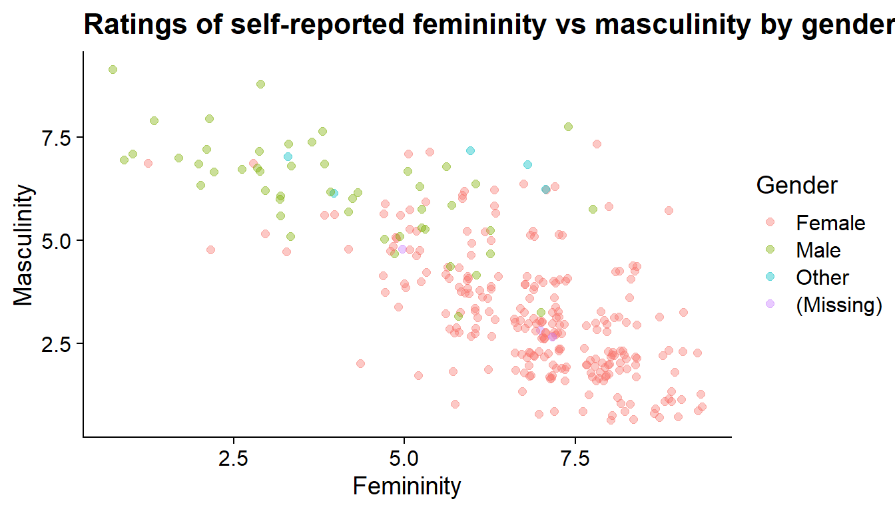

Measures of Association
Analysing Data Week 5
Dr Jennifer Mankin
Click for handout
```
Overview of the Next Weeks
- Today: Measures of Association
- Week 6: Comparing Two Means
- Week 7: Lab Report Writing
- Week 8: The Linear Model
Overview of Today’s Topics
- Review of Important Ideas
- Continuous vs Categorical Data
- Distributions, test statistics, and NHST
- Tests of Association
- What can we learn from these tests?
- Continuous Data: Correlation coefficient r
- Frequency Data: Chi-squared test χ2
Review of Important Ideas
- Data can be measured in many ways
- Continuous, categorial, ratio, ordinal…
- The type of data can have a big impact on your analysis and interpretion of results
Continuous Data
- A matter of degree; answers the question “How much?”
- Typically a score or measurement
- Examples: a quiz marks, height in cm, response latency
- If it makes sense to have a mean, you likely have continuous data
Categorical Data
- A matter of membership; answers the question “Which one?”
- Typically a group or label
- Examples: practical group, alive vs. dead, control vs experimental condition
- Membership in any category is binary (either in or out)
Distributions, Test Statistics, and NHST
- Everything from the past few weeks we will now put into action!
- For each statistical analysis, we will have the same ingredients:
- Data
- A test statistic
- The distribution of that test statistic
- The probability p of the value of the test statistic we have under the null hypothesis H0
Reminder about NHST
- For all of our tests, we assume that the null hypothesis is true unless we have evidence to suggest that this is unlikely
- “Evidence” such as a test statistic that is sufficiently unlikely to occur under H0
- In that case, we reject the null and accept the alternative hypothesis H1
- In psychology, “sufficiently unlikely” is typically defined as less than 5% probability (p < .05)
- Nothing magical about this number!
Overall Reminder
- As scientistis we want to believe true things about the world, and disbelieve false things
- NHST (p-values), and statistics more generally, are systems to help us make decisions about whether, and to what degree, we believe something is true
Measures of Association
- Essential questions: are two variables related to each other, or unrelated (independent)? How can we quantify this relationship?
- Choose a test statistic that best captures the relationship you want to model
- Today’s tests:
- Correlation (r)
- Chi-Squared (χ2)
Correlation
- Quantifies the degree and direction of a numeric relationship
- Typically used with two (or more) continuous variables
- Can be used when one is categorical!
- Today’s example: Gender and Sexuality data from the questionnaire
Correlation: Visualisation

Correlation
- The plot shows that people who gave high ratings for femininity tended to give low ratings for masculinity, and vice versa
- Things we might like to know:
- How strong is this relationship?
- Should we believe that it’s real (ie representative of people/first-year psychology students in general?)
Correlation: How strong?
- We can quantify the strength and direction of the relationship between femininity and masculinity with Pearson’s correlation coefficient r
- Strength: absolute value of r between 0 and 1
- 0: no relationship at all
- 1: perfect relationship
- Direction: whether the value of r is positive or negative
- Positive: as one variable increases, the other tends to increase
- Negative: as one variable increases, the other tends to decrease
- So, values range from -1 (perfect negative) through 0 (no relationship) to 1 (perfect positive)
Correlation: Let’s Try It!
gensex %>%
select(Gender_fem_1, Gender_masc_1) %>%
cor(method = "pearson")
Gender_fem_1 Gender_masc_1
Gender_fem_1 1.0000000 -0.7553645
Gender_masc_1 -0.7553645 1.0000000- So, our correlation coefficient r is -0.76
- The negative sign (-) means as femininity increases, masculinity tends to decrease (and vice versa)
- We saw this on the plot as a downward trend left to right
- The absolute value of 0.76 is very strong - quite close to 1!
Correlation: Is It Real?
- We now have our data and our test statistic r (-0.76)
- We can now ask likely we are to get a value of -0.76 if in fact femininity and masculinity have a true r of 0
- i.e. the null hypothesis is in fact true
- We will use the standard significance level of < .05 in this case
Correlation: Is It Real?
fm.r <- cor.test(gensex$Gender_fem_1, gensex$Gender_masc_1, alternative = "two.sided", method = "pearson")
fm.r
Pearson's product-moment correlation
data: gensex$Gender_fem_1 and gensex$Gender_masc_1
t = -20.098, df = 304, p-value < 2.2e-16
alternative hypothesis: true correlation is not equal to 0
95 percent confidence interval:
-0.7997536 -0.7027607
sample estimates:
cor
-0.7553645 We can report this as: “There was a significant correlation between femininity and masculinity, r(304) = -0.76, p < .001.”
Correlation: r or t?
Our output includes t and its associated p-value:
Pearson's product-moment correlation
data: gensex$Gender_fem_1 and gensex$Gender_masc_1
t = -20.098, df = 304, p-value < 2.2e-16
alternative hypothesis: true correlation is not equal to 0
95 percent confidence interval:
-0.7997536 -0.7027607
sample estimates:
cor
-0.7553645 This is because the probability p associated with r actually comes from a t-distribution with N - 2 degrees of freedom!
Correlation: So Far
- We have seen that the correlation coefficient r expresses the strength and direction of the relationship between two variables
- We can use this to compare the strength of different relationships
Correlation: Comparing rs

Correlation: Interpretation
- For both female-ID and male-ID people, there is a fairly strong negative relationship
- We can use r to quantify whether this relationship is stronger for female-ID or male-ID people
- Simply compare the values of r for females and males separately
Correlation: Comparing values
- For female-ID people, r(248) = -0.64, p < .001
- For male-ID people, r(46) = -0.58, p < .001
- So, the relationship between femininity and masculinity is stronger for female-ID people
- WARNING: we should be careful about this, because we had 250 female-ID participants and 48 male-ID participants!
- How can we check the accuracy of our estimates of r for each gender ID?
Correlation: Comparing values
- For female-ID people, r was -0.64, 95% CIs [-0.7, -0.56] so +/- 0.07
- For male-ID people, r was -0.58, 95% CIs [-0.74, -0.36] so +/- 0.16
- Having more female-ID people means our CIs are smaller and estimates are more accurate
- As these CIs overlap substantially, it’s possible that the true value of r for male-ID people is not actually different from female-ID people
Correlation: VOCAB ALERT!
- In common language, “correlated” means “related to in some way, usually causally”
- Statistics: the (standardised) degree to which two or more variables covary, ie change in relation to each other
- “Correlation” is a technical term!
- In your reports, do not say two things are “correlated” unless you plan to report r as evidence!
- Instead: variables have a relationship/are related to each other
Correlation: Summary
- The correlation statistic r helps us quantify and compare the strength and direction of relationships between variables
- How r is calculated, relationship to t, etc: see reading!
- Correlation DOES NOT IMPLY CAUSATION!!!!!!!
- More practice with interpreting r with this fun little game
Making Progress
- Correlations: sorted!
- But we’ll come back to them later…
- Next up: Chi-Square (χ2)
Chi-Square Test χ2
- Quantifies the relationship between frequencies
- Typically used with two (or more) categorical variables
- Shows up in many contexts!
- Also used for comparing different models…more in second year!
- Today’s example: Simulated data based on the green study, Griskevicius et al. (2010)
Green Study: Design
- Research question: Why do people choose to buy “green” products?
- Conceptual hypothesis: buying “green” products is related to status motives
- Griskevicius et al. (2010) operationalisation:
- Story condition: read high-status story or status-neutral story
- Product choice: green or more luxurious non-green product
- Three products: car, soap, and dishwasher
- Operational hypothesis: people in the high-status condition will choose the green products more often than people in the control condition
Green Study: Data
Here’s what the data may look like
- CONDITION: control story or experimental (high-status) story
- CHOICE: product choice, either green or luxury
- We’ll just look at the results for one of the three products - the car
# A tibble: 443 x 6
ID_CODE GENDER AGE CONDITION PRODUCT CHOICE
<fct> <fct> <dbl> <fct> <fct> <fct>
1 WYYJ male 25 control dishwasher luxury
2 WYYJ male 25 control cleaner green
3 WYYJ male 25 control car luxury
4 TBSY female 19 control dishwasher green
5 TBSY female 19 control cleaner luxury
6 TBSY female 19 control car green
7 CVWL female 18 control dishwasher green
8 CVWL female 18 control cleaner green
9 CVWL female 18 control car luxury
10 ILVB other 21 control dishwasher green
# ... with 433 more rowsGreen Study: Summary Table
| Non-Green Luxury Product | Green Product | |
|---|---|---|
| Control Story | 51 | 26 |
| High-Status Story | 33 | 37 |
Green Study: Graph

Green Study: Analysis
- Are story condition and product choice independent of each other?
- If yes: story condition has no association with product choice
- If no: story condition is associated with product choice
- The observed frequencies for our sample show some pattern
- How much of a pattern is enough to believe that condition and choice are not independent?
- Compare to what we might expect under the null hypothesis
- Calculate χ2 to quantify this
Chi-Squared: Expected Frequencies
| Non-Green Luxury Product | Green Product | |
|---|---|---|
| Control Story | 44 | 33 |
| High-Status Story | 40 | 30 |
- We might expect that there are equal counts in each cell (combination of conditions)
- BUT: To account for unequal numbers of people who chose the green vs non-green products, instead we can calculate the expected frequencies
- That is: how many counts we would expect in each cell, if the null hypothesis is true
- See An Adventure in Statistics (pgs 434 to 442) for calculations
Note on Chi-Squared: Expected Frequencies
- Important assumption: you can only use χ2 if you have expected frequencies greater than 5 in each cell
- Smaller than this and the test lacks sufficient power to detect relationships
- For very small expected frequencies, you may want to use Fisher’s Exact Test instead
- For more on this, see An Adventure in Statistics pgs 442 - 444
Chi-Squared Test: Observed vs Expected
- Next, we compare the expected frequencies to our observed frequencies
- The χ2 test statistic represents the (standardised) difference between the observed and expected frequencies
- The bigger χ2 is, the bigger the difference is between our data and what we expect under the null hypothesis
Chi-Squared: Output
Pearson's Chi-squared test with Yates' continuity correction
data: green_sum
X-squared = 4.7051, df = 1, p-value = 0.03007- The calculated value for χ2 (here, “X-squared”) is 4.71
- The degrees of freedom, which determines the χ2 distribution, is 1 from which we get…
- The p-value, which represents the probability of getting a test statistic this big if the null hypothesis is in fact true
- Here, p is very small ( = .030), so pretty unlikely!
- We might conclude that the null hypothesis might not be true
IMPORTANT!!!
- We can only test the significance (probability) of the null hypothesis being true
- This does not mean we have evidence for the alternative hypothesis
- In other words: Our test tells us that it is unlikely that there is no relationship (small p-value under the null hypothesis)
- From that we infer that maybe there is a relationship
- That will only be a sensible thing to infer if we have carefully controlled for all other explanations
Green Study: What Can We Conclude?
- We wanted to know whether status motives influence “green” purchases
- Operationalised as whether reading a high-status vs control story was associated with the frequency of green product vs a non-green luxury product choice
- We found that 52.86% of participants who read the high-status story chose a green car over a more luxurious non-green alternative,while only 33.77% of participants who read the control story made the same choice (χ2(1) = 4.71, p = .030).
- So, our results suggest that high-status motives are related to how frequently people choose green products
Lab Reports
- You can choose either the red or green study to write your report on
- See Lab Report Information on Canvas for more
- If you choose the green study (Griskevicius et al., 2010), you should use and report the results of χ2
- Refer to the original paper for some ideas!
Analysis for Lab Reports
- Inspect and clean the data
- Produce descriptives of participants (age, gender)
- Report observed frequencies and χ2 results for all three product choices
- Include at least one figure of the results
- Will be covered in depth in the next tutorial and practical!